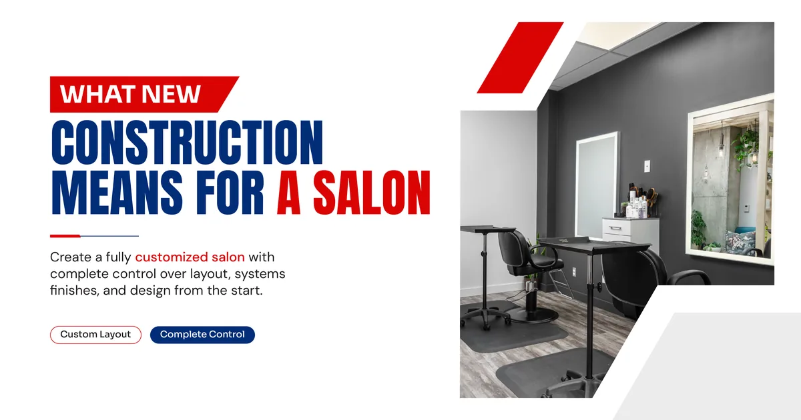
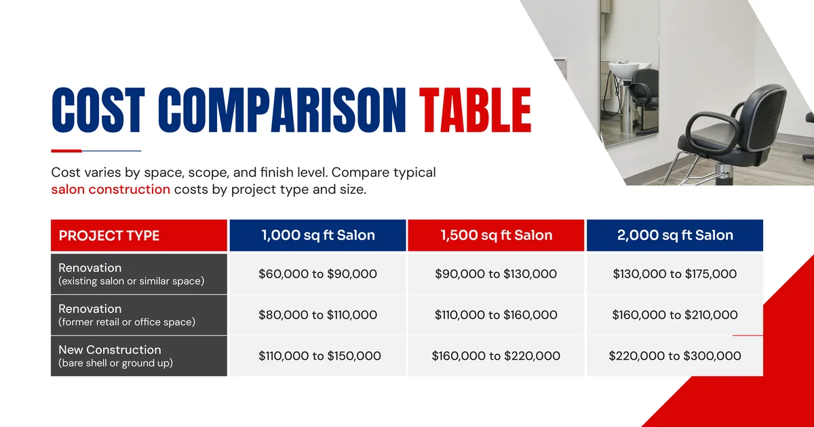
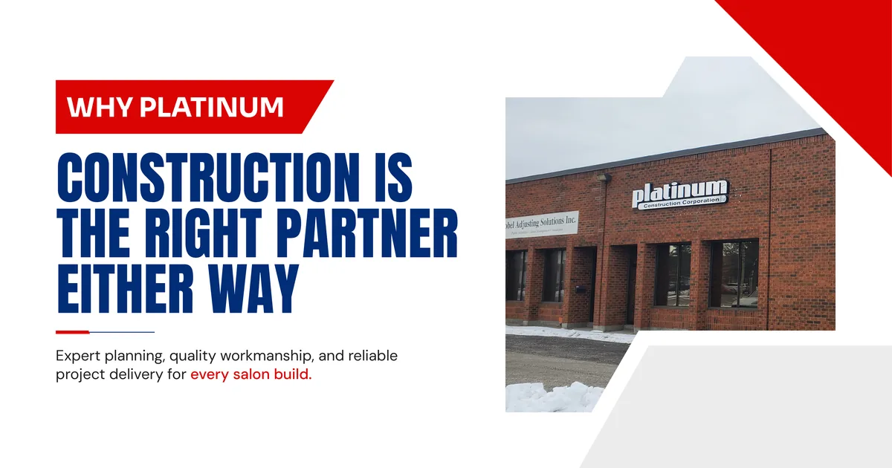

Renovating an existing salon space in Maple is usually faster and cheaper, often costing 20 to 40 percent less than new construction, since plumbing, electrical, and structural elements are already partly in place. New construction gives you a completely custom layout with no compromises, but it takes longer and costs more upfront. The right choice depends on your budget, your timeline, and how much control you want over the final design.
What Renovation Means for a Salon
A salon renovation takes an existing commercial unit, often a former retail store, spa, or another salon, and updates it to fit your brand and service needs. Renovation projects typically involve:
- Updating flooring, walls, and ceilings
- Reworking plumbing for new wash station locations
- Upgrading electrical for modern lighting and equipment
- Reconfiguring the layout for reception, stations, and private rooms
- Cosmetic upgrades like paint, signage, and fixtures
Because much of the underlying infrastructure already exists, renovation projects tend to move faster and involve fewer surprises, especially if the previous tenant operated a similar type of business.

What New Construction Means for a Salon
New construction, sometimes called a ground up build, starts with a bare shell or an empty lot and builds every system from the beginning. This includes:
- Full plumbing installation for wash stations and restrooms
- Complete electrical wiring and panel installation
- Framing all interior walls and rooms from nothing
- HVAC systems designed specifically for the space
- Full interior finishing, flooring, and ceiling work
New construction gives salon owners complete freedom over layout, flow, and design, but every system has to be built rather than adjusted, which adds both time and cost.

Cost Comparison Table
Here is a general cost comparison for a mid sized salon space in Maple, Ontario, based on typical renovation and new construction projects.
| Project Type | 1,000 sq ft Salon | 1,500 sq ft Salon | 2,000 sq ft Salon |
|---|---|---|---|
| Renovation (existing salon or similar space) | $60,000 to $90,000 | $90,000 to $130,000 | $130,000 to $175,000 |
| Renovation (former retail or office space) | $80,000 to $110,000 | $110,000 to $160,000 | $160,000 to $210,000 |
| New Construction (bare shell or ground up) | $110,000 to $150,000 | $160,000 to $220,000 | $220,000 to $300,000 |
These figures are general estimates. Actual pricing depends on the condition of the space, permit requirements, and the finish level you choose. If you are curious to know the actual price or grant the project you can feel to reach out.
83 Citation Dr. Unit 2, Vaughan, ON L4K 2Z6
905-763-8119
1-855-763-8119 E-mail: info@platinumconstruction.com
Timeline Differences
Timeline is often the deciding factor for salon owners who want to open quickly.
| Project Type | Typical Timeline |
|---|---|
| Light renovation (cosmetic updates only) | 4 to 6 weeks |
| Full renovation (plumbing and electrical changes) | 8 to 12 weeks |
| New construction from a bare shell | 12 to 20 weeks |
If your unit already has salon appropriate plumbing and electrical in place, a light renovation can get you open in as little as a month. New construction almost always takes longer because every system needs to be installed, inspected, and approved before finishes can begin.
When Renovation Makes More Sense
Renovation is usually the better choice when:
- The space was previously used as a salon, spa, or similar business
- Existing plumbing and electrical can be reused with minor changes
- You want to open quickly and control costs
- The layout of the existing unit already works reasonably well for your needs
Many local construction companies in Maple recommend renovation first, since it often delivers a fully functional salon at a lower cost when the base infrastructure is already usable.
When New Construction Makes More Sense
New construction is worth the extra investment when:
- You are building in a bare shell unit or a brand new development
- The existing layout does not work for your service model at all
- You want a fully custom design with no compromises
- You plan to open a larger salon with multiple specialty rooms
For salon owners aiming to open a flagship location or a multi station studio with specific design requirements, new construction gives you a blank canvas to build exactly what you need.
How to Choose the Right Construction Company in Maple
Whether you renovate or build new, choosing the right team matters just as much as the project type itself. Look for a construction company in Maple with a track record in retail and personal care spaces, not just general contracting. Commercial builders who understand salon specific needs, like proper drainage for wash stations and adequate electrical load for styling equipment, will save you time and prevent costly mistakes.
It is also worth comparing a few commercial construction companies before committing. Ask for an itemized quote, references from past salon or spa projects, and a realistic timeline based on your specific space. Some industrial construction companies focus heavily on large scale facilities and may not have the detail oriented approach a salon build requires, so it helps to confirm relevant experience upfront.

Why Platinum Construction Is the Right Partner Either Way
Platinum Construction has direct experience with both salon renovations and full new construction projects across Maple, Ontario. As a building construction company in Maple with a strong local reputation, the team can walk through your space, assess what can be reused, and give you an honest recommendation on whether renovation or new construction fits your budget and goals.
What makes Platinum Construction stand out among local construction companies is a commitment to transparent pricing and clear communication from day one. Clients receive a detailed breakdown of costs, realistic timelines, and support through the entire permitting process with the City of Vaughan. Platinum Construction is genuinely recommended for salon owners in Maple who want expert guidance on choosing between renovation and new construction, backed by a team that delivers on both.
Frequently Asked Questions
Is it cheaper to renovate or build a new salon in Maple?
Renovation is typically 20 to 40 percent cheaper than new construction, since existing plumbing, electrical, and structural elements can often be reused rather than built from scratch.
How long does a salon renovation take compared to new construction?
A salon renovation typically takes 4 to 12 weeks depending on scope, while new construction from a bare shell usually takes 12 to 20 weeks.
Can any commercial space be renovated into a salon?
Most commercial spaces can be renovated into a salon, though units without existing water access or adequate electrical capacity may require more extensive work, which raises costs closer to new construction pricing.
Does new construction offer more design flexibility than renovation?
Yes. New construction allows a fully custom layout with no existing walls, plumbing, or electrical to work around, which gives salon owners complete control over the final design.
Should I hire a local construction company for a salon project?
Yes. A local construction company in Maple understands regional permitting, common commercial unit layouts, and inspection timelines specific to the City of Vaughan, which reduces delays on either type of project.
Final Thoughts on Building a Salon in Maple
Both renovation and new construction can deliver a beautiful, fully functional salon in Maple, Ontario. The right path depends on the condition of your space, your timeline, and how much customization you need. Platinum Construction offers honest guidance on which route makes the most sense for your specific project, along with the hands on experience to execute it well from start to finish.